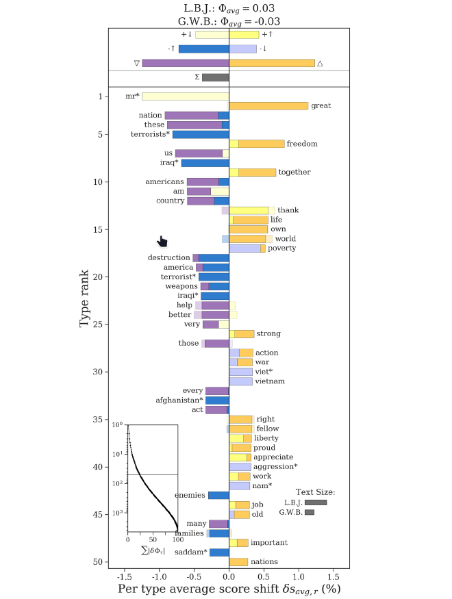

Visualización de Texto
Hasta esta unidad hemos visto diferentes tipos de datasets estructurados. Debido a la estructura y atributos de cada dataset podíamos determinar las marcas y canales efectivas y coherentes al diseñar una visualización. En las visualizaciones que hemos conocido, el texto ha estado presente: lo utilizamos para darle nombre a los atributos, y así, por ejemplo, poner una etiqueta en el eje x, desplegar el nombre de los nodos en un node_link_diagram de una red social, o indicar el nombre de un área geográfica en un choropleth_map. Sin embargo, podemos encontrar situaciones en las que el texto no es un atributo explicativo o una anotación, sino que es parte de la tarea a realizar. Esta situación es frecuente, puesto que pran parte de la información disponible en el mundo es texto.
¿Cómo luce una visualización con texto? La siguiente visualización (explicada con mayores detalles aquí) muestra un line_chart que muestra el volumen de tweets generados en una discusión durante cuatro años, utilizando notas para explicar eventos relevantes, y marcas de texto para indicar los temas, palabras y otros elementos textuales relevantes para cada año de discusión:

Caracterizando períodos de tiempo con el lenguaje asociado a cada año en la discusión sobre aborto en Twitter. Fuente: Eduardo Graells-Garrido, Ricardo Baeza-Yates, & Mounia Lalmas. Every Colour You Are: Stance Prediction and Turnarounds in Controversial Issues.
Cuando el texto es una marca y no una anotaci√≥n nos encontramos con distintos desaf√≠os: su tama√±o depende del largo del texto y de la tipograf√≠a utilizada, tambi√©n puede contener elementos utilizados en el texto pero que no son textuales, como emoji (üíö en este caso). En el ejemplo, la posici√≥n en el eje x del texto expresa el a√±o que está caracterizando, y la posici√≥n en el eje y expresa la relevancia que tuvo para ese a√±o. El tama√±o de la tipograf√≠a tambi√©n codifica ese valor. Ahora bien, este ejemplo no define una t√©cnica en particular, porque el principal componente de la visualizaci√≥n sigue siendo un line_chart. Podr√≠amos decir que es un line_chart contextualizado con una visualizaci√≥n de texto.
Así, en esta unidad exploraremos distintas técnicas de visualización de texto. A diferencia de los data sets que hemos visto hasta ahora, el texto no tiene una estructura clara, de hecho, se le considera un tipo de dato no estructurado. ¿Cómo es eso posible? Para nosotres, las personas, el texto sí tiene estructura. Podemos identificar letras, palabras, frases, párrafos, documentos — elementos que entendemos gracias a la gramática y a la semántica. Entonces, ¿por qué decimos que no tiene estructura?
La estructura que vemos en el texto está en nuestras mentes y en la estructura comunicacional de la sociedad. No está especificada en como se almacena el texto en una máquina. En términos básicos, un documento suele ser almacenado como una larga cadena de carácteres, uno detrás del otro. Los aspectos estructurales que son comunes en otros tipos de datos no son necesariamente significativos o útiles en el texto. Por ejemplo, en una tabla sabemos que cada fila tiene la misma cantidad de columnas. En un corpus o conjunto de documentos, ¿tienen todos los documentos la misma cantidad de palabras?¿Se utilizan las mismas palabras en cada uno de ellos?¿Están todos en el mismo idioma? Imponer una estructura al texto sin saber lo que queremos hacer con él limitará los problemas que podemos resolver y las herramientas que podamos utilizar.
Antes de definir cómo almacenaremos o analizaremos un texto o un corpus necesitamos definir los tipos de tareas realizables. Algunos ejemplos de tareas para texto son las siguientes:
- Entender lo que contiene un documento o conjunto de documentos (corpus).
- Agrupar documentos distintos dentro de una misma categoría de acuerdo a su similitud.
- Comparar y medir qué diferencia un texto o colección de documentos de otro(a).
- Medir la evolución en el tiempo de un texto de una colección de documentos.
- Correlacionar patrones en el texto con los de otros data sets, por ej., con los de una red social.
Además de nuestro enfoque basado en tareas, debemos cuestionar la interpretación y la confianza en una visualización de texto. Interpretación se refiere a qué tan bien las propiedades del modelo son caracterizadas por la visualización. Confianza se refiere a cuánto podemos entender el texto debido al modelo. Por ejemplo, si no sabemos si el modelo es adecuado, ¿es debido al modelo o a la visualización?
Tal como sucedía con las tareas para otros datasets, algunas de estas operaciones pueden ser automatizables para ciertos casos de uso, mientras que en otros casos deberemos complementar los resultados de un método computacional con el conocimiento humano. Por ello, antes de explorar técnicas de visualización, vamos a ver un resumen de estructuras de datos y técnicas computacionales de análisis de texto.
Estructura de Datos y Análisis de Texto
¿Cómo representar una colección de documentos? Para poder visualizar texto necesitamos darles una estructura. No siempre se visualiza el texto directamente, sino que suele utilizarse un modelo de lenguaje, un enfoque para convertir el texto en estructuras que ya conozcamos. Veremos distintos enfoques, desde algunos sencillos (bag of words) a otros complejos basados en operaciones matemáticas sobre la estructura del texto.
Uno de los enfoques más utilizados, y que de cierto modo es base para casi todos los demás, es bag of words (bolsa de palabras). En este esquema, una colección se representa con una matriz: en la imagen, cada columna es un documento, y cada fila es una palabra. Cada celda contiene la frecuencia de la palabra correspondiente a la fila en el documento correspondiente a la columna, es decir, la cantidad de veces que aparece una palabra en un documento:
Matriz Documentos-Términos, o Document-Term Matrix, correspondiente al enfoque bags of words. Fuente: Wikipedia.
Un término puede ser una palabra, pero también puede ser un símbolo (como los emoji), una expresión de múltiples palabras juntas (un n-grama). El término bag of words le da un significado genérico a word (palabra). Noten que esta representación pierde el orden en el que aparecieron las palabras en el documento. De ahí el nombre bolsa de palabras: están todas juntas en la bolsa sin un orden específico. Llamaremos a esta matriz como dtm (document-term matrix)
Debemos tener cuidado con el tamaño de la dtm, ya que la cantidad de palabras que tendremos suele ser órdenes de magnitud más grande que la cantidad de documentos. Afortunadamente, la mayoría de los documentos usa una fracción ínfima del total del vocabulario disponible, de modo que la matriz está llena de ceros. Este tipo de matriz es conocida como sparse matrix (matriz dispersa) y existen maneras eficientes de almacenarlas.
Al ser una matriz podemos realizar operaciones algebraicas sobre sus filas y columnas, que permiten responder preguntas como el tamaño de la colección, las palabras o documentos con mayor/menor frecuencia, o incluso calcular la similitud entre dos documentos.
Pero, ¿basta describir relaciones entre documentos y palabras para entender un corpus? A veces es necesario entender qué es lo que contienen los documentos en términos semánticos. Las técnicas de topic modeling (modelamiento de tópicos) buscan identificar los temas o tópicos en los documentos de un corpus; algunas de estas técnicas aprovechan la estructura matricial del corpus para hacerlo. Es el caso de Non-Negative Matrix Factorization (nmf), o factorización no-negativa de matrices. Esta técnica busca descomponer la matrix original M (una dtm), que contiene m documentos (columnas) y n palabras (filas), en la multiplicación de dos matrices A x W, donde A es de n palabras (filas) y r tópicos (columnas), y W de r tópicos y m documentos, como se ve a continuación:
Diagrama que explica el funcionamiento de Non-Negative Matrix-Factorization. Fuente: S. Arora et al. Building Topic Models Based on Anchor Words.
Esta descomposición es posible debido a que todos los elementos de M son positivos (>= 0). La factorización se define como un problema de optimización, y en sí misma no es un problema de modelamiento de lenguaje, más bien la interpretación que se les da a las matrices A y W se relaciona con lenguaje. La matriz A contiene la relación entre las palabras del corpus y los tópicos, y la matriz W contiene la relación entre los documentos y los tópicos. De esta manera, la relación entre un documento y sus palabras (codificada en la matriz M) se expresa como la suma de la relación entre palabras y tópicos, y la relación entre tópicos y documentos. Ahora bien, ¿de dónde sale el parámetro r, que define la cantidad de tópicos a analizar? Usualmente es un parámetro especificado por la persona que realiza el modelamiento. No existe una regla que indique el número óptimo de temas dentro de un corpus, además, las relaciones que encuentra este método son latentes, es decir, obedecen a patrones matemáticos dentro de la matriz M y no necesariamente a como una persona interpreta el concepto “tópico” o “tema.” Por ello, la visualización de modelos de tópicos es importante, ya que permite entender lo que está capturando el modelo e iterar sobre los parámetros que recibe.
Otra interpretación de nmf es que realiza una reducción dimensional, ya que permite expresar tanto palabras como documentos como un vector de menores dimensiones a las originales. Aunque si lo que buscamos es reducir la dimensionalidad de nuestro dataset, existen técnicas mejores y más adecuadas para visualización.
Una de esas técnicas es umap (Uniform Manifold Approximation and Projection). En esencia, es una técnica de reducción dimensional que considera relaciones complejas entre los elementos del dataset, en contraste con nmf que considera que un elemento es la simple suma de sus componentes latentes. Esta técnica se suele utilizar para expresar cada elemento del dataset en 2 o 3 dimensiones, lo que facilita su visualización. Como ejemplo, esta proyecto muestra un corpus de documentos filosóficos, para mostrar “la estructura de la filosofía reciente.” Para ello, primero aplica umap sobre la dtm, luego un algoritmo de clustering para identificar grupos y finalmente un posicionamiento de etiquetas y anotaciones que puede ser manual. El resultado es el siguiente:

La estructura de la filosofía. Fuente: Maximilian Noichl.
Es común utilizar umap (o técnicas similares) para presentar una vista global del dataset. Por ejemplo, una persona podría hacer clic en uno de los clusters de la visualización, y así entrar a otra vista que muestre los detalles de ese cluster.
Existen modelos más avanzados que sí consideran el orden y las secuencias de palabras. Es un tema que queda para un curso avanzado de Machine Learning o Procesamiento de Lenguaje Natural (NLP). Sin embargo, el resultado de dichos modelos sigue expresándose como vectores o matrices asociadas al texto, y por tanto, algunas de las técnicas de visualización que veremos en esta unidad también se pueden aplicar a ellos. También veremos técnicas de visualización que se pueden aplicar a otros aspectos del texto, por ejemplo, a su estructura lingüística o a una estructura de red inferida.
Word Cloud
Las word_cloud surgieron como una manera de navegar por sitios en la (ya) vieja Web 2.0. En ellas, cada palabra en el corpus es una marca cuyo canal de tamaño es proporcional a su frecuencia. Usualmente el canal de color es aleatorio, y el canal de posición optimiza el espacio entre las palabras para que sea el menor posible. La siguiente es la word_cloud de una canción recientemente popular en Chile:
Fingías de Paloma Mami.
Aunque las word_cloud son un tipo de visualización popular tienen muchos defectos visibles en la imagen. En función de los principios de diseño, el canal de área utilizado para graficar la frecuencia dificulta comparaciones, tanto por percepción como al largo de las palabras. Además las palabras más frecuentes no son necesariamente informativas. Es posible quitar palabras comunes o frecuentes que no significan nada por sí mismas (como “que” o “lo”), sin embargo, se puede confundir la noción de volumen (frecuencia) con la de relevancia.
Si la tarea es tener una vista global del vocabulario, una word_cloud puede ser un buen punto de partida debido a que permite agrupar muchas palabras en poco espacio. Pueden hacer las suyas en la página de Jason Davies.
Un uso de word_cloud es como elemento de navegación. El siguiente ejemplo muestra un data portrait, concepto acuñado por Judith Donath que define un retrato generado a partir de los datos de un perfil (en el ejemplo, el mío en Twitter el 2015), donde la word_cloud es el principal elemento de navegación:
Data Portraits. ¿Cómo te ves en la Web? Fuente: E. Graells-Garrido, M. Lalmas, R. Baeza-Yates, Data portraits and intermediary topics: Encouraging exploration of politically diverse profiles.
En este ejemplo, el canal de color no es aleatorio, ya que expresa la categoría de cada término incluido en la word_cloud. Al hacer click en una palabra se muestra el período de tiempo en que esa palabra se utiliza, a través de los colores del bar_chart que muestran la frecuencia de twitteo por semana del año. Al mismo tiempo, al hacer clic en una barra del bar_chart, se muestran las palabras que se utilizaban en la fecha correspondiente. De esta manera, el data portrait permite explorar el contenido que genera una persona desde una vista temática y temporal.
Bubble Clouds
Una bubble_cloud es similar a un scatter_plot en tanto las marcas son círculos (burbujas) posicionadas en el espacio, cuyo canal de tamaño representa la frecuencia de la palabra correspondiente a la marca. Cada burbuja tiene escrita sobre sí la palabra correspondiente. Esta codificación visual resuelve algunas de las limitaciones de las word_cloud, y permite incorporar otros atributos en cada marca. Es un gráfico agradable estéticamente y fácil de entender.
El siguiente ejemplo muestra uno de los casos de uso más populares de bubble_cloud, donde la posición en el eje x expresaba la asociación política de cada palabra utilizada en los discursos de candidatos presidenciales en los Estados Unidos:
Asociación de cada palabra con los partidos políticos en los Estados Unidos. Fuente: New York Times.
El uso de colores para mostrar la distribución del uso de cada palabra en los dos documentos del corpus (uno representando a Barack Obama y el otro a Mitt Romney) permite entender la semántica de la posición de las burbujas, y obtener conocimiento respecto a como cada candidato utiliza un lenguaje distinto para expresarse.
Parallel Tag Cloud
Otra variación de la word_cloud es parallel_tag_cloud, una visualización que pone el énfasis en las distintas facetas o categorías que tiene un corpus. Las facetas incluyen temáticas, tiempo de publicación de los documentos, y otras categorías, que suelen estar predefinidas antes de la visualización. Así luce esta técnica:
Fuente: C. Collins, F. Viègas, & M. Wattenberg. Parallel tag clouds to explore and analyze faceted text corpora.
Esta visualización muestra para cada faceta la distribución de la frecuencia o relevancia de palabras, y al mismo tiempo, cómo esa relevancia varía a lo largo de las facetas. Así podemos entender cuales facetas son similares (o no), y cuál es el vocabulario asociado a cada faceta.
ScatterText
ScatterText es un scatter_plot que enfatiza las diferencias entre dos documentos (o dos categorías de documentos) respecto a sus términos más relevantes (¡no necesariamente los más frecuentes!). Es una herramienta en Python que incluye múltiples maneras de calcular dicha relevancia. El límite de dos documentos está dado por la codificación visual, basada en un eje vertical y otro horizontal. La visualización luce así:

Una visualización de Scattertext es un scatterplot con texto. Fuente: Jason Kessler, Scattertext: a Browser-Based Tool for Visualizing how Corpora Differ.
En el ejemplo, el eje y codifica la asociación en el vocabulario de un corpus de política hacia hombres y mujeres, y el eje x hacia republicanos y demócratas en los Estados Unidos. Así, esta técnica nos muestra que es posible aprovechar visualizaciones existentes para realizar tareas con texto.
Shifterator
Shifterator es otra herramienta que visualiza diferencias entre dos textos, esta vez utilizando dos stacked_bar_chart como base, uno por cada documento. Al igual que ScatterText, se basa en una batería de cálculos de relevancia, que denomina word_shifts, y que se pueden calcular en función del sentimiento de las palabras y del período en que se utilizan, y que son asociados de manera positiva o negative en su aporte a cada documento. Luce así:

Shifterator que compara los discursos de dos presidentes de Estados Unidos.
El eje y permite expresar la importancia de las palabras (más importante, más arriba) y la dirección de cada barra permite expresar su contribución o relevancia para cada documento. El color de cada barra expresa el tipo de asociatividad. De este modo, esta técnica permite determinar rápidamente qué y cómo se caracterizan dos documentos (también podrían ser dos facetas) de un corpus.
LDA Vis
Como comentamos antes, cuando se realiza topic modeling de una colección se vuelve necesario visualizar los tópicos. El software pyLDAvis utiliza una visualización interactiva compuesta de un scatter_plot y un stacked_bar_chart para que podamos explorar el espacio de topics de un corpus. El sistema recibe su nombre de la técnica de topic modeling lda (Latent Dirichlet Allocation), pero también es compatible con nmf. El sistema luce así:
LDAVIS, un sistema para visualizar tópicos. Fuente: C. Sievert & K. Shirley. LDAvis: A method for visualizing and interpreting topics.
Observamos a la derecha el scatter_plot que muestra cada tópico como una burbuja, con una posición calculada utilizando reducción dimensional. Esto permite saber cuáles tópicos se parecen (porque están cerca en el gráfico). Al hacer clic en una burbuja, el gráfico a la izquierda se actualiza para mostrar los términos asociados a ese tópico. Ese gráfico es un stacked_bar_chart que muestra la distribución de frecuencia de términos asociados al tópico (barras rojas) y la distribución de esos mismos términos en el corpus completo (barras grises). Esta interactividad permite explorar todos los tópicos, y determinar si es necesario agregar más tópicos (porque algunos presenten temas mezclados entre sí) o reducirlos (porque algunos puedan ser redundantes, o contener ruido).
Topic Competition
Como vimos en parallel_tag_cloud, una colección de documentos no es estática, ya que puede tener facetas de tiempo. Por tanto, sus tópicos tampoco son estáticos: cada tópico puede tener su propio comportamiento temporal.
Para entender las dinámicas de los tópicos, la visualización topic_competition utiliza múltiples streamgraph para mostrar la evolución temporal de cada tópico. Debido a que el comportaimento de los tópicos puede ser complejo, estas visualizaciones son apoyadas por algoritmos que calculan los flujos del streamgraph de manera que se crucen lo menos posible y que se pueda comprender el contenido de cada uno. Dicho contenido se presenta con visualizaciones incrustadas como word_cloud, así:
Evolución de los temas de una colección en el tiempo. Fuente: P. Xu et al. Visual analysis of topic competition on social media.
Visualizaciones como topic_competition son útiles sobretodo para humanidades digitales y periodismo de datos, ya que permiten analizar como distintos fenómenos basados en texto evolucionan en el tiempo.
Phrase Nets
Otro enfoque de ver estructura en el texto es utilizar patrones basados en sintaxis. Por ejemplo, podríamos revisar todas las instancias en que aparece un texto del estilo “A y B”, y cada A y cada B que cumpla con ese patrón es considerado como un par de nodos conectado en una red. Como tal, es una red que puede ser visualizada utilizando un node_link_diagram. Esta visualización existe y se llama phrase_net. El siguiente es un ejemplo del patrón “X is Y” aplicado al texto de la novela Orgullo y Prejuicio (en su edición original en inglés):
Una Phrase Net de Orgullo y Prejuicio. Fuente: F. Van Ham, M. Wattenberg, & F. Viègas. Mapping text with phrase nets.
A diferencia del node_link_diagram típico, aquí utilizamos palabras como marcas, de manera similar a las word_cloud. Ahora bien, en la red observamos comunidades tanto de personajes que son mencionados juntas (como Jane y Elizabeth) como de sentimientos (pride and vanity, regret and vexation) y de acciones (play and sing). Si quisieramos conocer la estructura de relaciones en la novela, este tipo de visualización permite responder preguntas sobre la topología de dicha red. Ahora bien, hace falta definir un patrón más completo que “X is Y” para que la red sea exhaustiva.
Evolución y Cambios: History Flow
Además de las facetas del texto (como la fecha de publicación), existen otros atributos relevantes. Por ejemplo, el historial de modificación de un documento - particularmente si es escrito por más de una persona. El sistema history_flow permite ver el proceso de escritura y construcción de los artículos de Wikipedia, tanto a nivel temporal (cuándo se agregó o quitó contenido) como autoral (quién agregó o quitó contenido). El sistema utiliza un stacked_area_chart donde cada autor(a) es expresada en una de las áreas de la visualización. Luce así:

Evolución de un artículo en Wikipedia visto por History Flow. Fuente: F. Viégas, M. Wattenberg, K. Dave, Studying cooperation and conflict between authors with history flow visualizations.
Este tipo de visualización permite conocer como un tema en Wikipedia evoluciona con el tiempo, es decir, descubrir cuándo el tema se volvió relevante, cuándo fue polémico, cuándo despertó el interés del público general y cuánto duró ese interés — algo útil para correlacionar con datos históricos, como eventos legislativos, de modo de entender el efecto de eventos noticiosos o políticos en la percepción de las personas sobre el tema, que en el caso del ejemplo, es polémico: el aborto.
Notabilia
Notabilia es una visualización orgánica que muestra los procesos de edición en Wikipedia desde el conflicto: se focaliza en los artículos que son marcados para eliminación. Cada artículo es una línea cuya trayectoria se forma a medida que la discusión decide si el artículo se elimina o se mantiene en la enciclopedia. La codificación visual de esta visualización utiliza una polilínea por cada artículo, cuyo trazado está influenciado por las decisiones que toman les editores en el tiempo. Si el artículo recibe votos de mantención, se suma un segmento verde, hacia la izquierda. Si recibe votos de eliminación, se suma un segmento rojo, hacia la derecha. Eso más algo de aleatoriedad para darle una apariencia orgánica, similar a un árbol. Se ve así:
Notabilia, ¿qué páginas en Wikipedia sobreviven al criterio de les editores? Fuente: Moritz Stefaner, Dario Taraborelli & Giovanni Luca Ciampaglia.
El consenso (o la falta de éste) es expresado en la visualización.
Organic Visualization of Document Evolution
La evolución mostrada en las visualizaciones anteriores trabaja con versiones de un texto. Sin embargo, no todo el texto es versionado, y el versionamiento no tiene la capacidad de capturar el proceso mental de la escritura, que es más bien expresado en cada uno de los cambios atómicos que hacemos en el texto, construido tecleo a tecleo, con cambios de posiciones del cursor. La siguiente visualización propone visualizar ese proceso utilizando la metáfora de un árbol de eventos, donde la marca es un conjunto de polilíneas (las ramas), que contienen secuencias de eventos. Cuando hay una bifurcación en el texto, como puede ser un cambio de posición o la eliminación de una sección, se crean ramas nuevas. La visualización se ve así:
Visualización orgánica de la evolución de un texto. Fuente: Ignacio Pérez-Messina, Claudio Gutiérrez, Eduardo Graells-Garrido, Organic Visualization of Document Evolution.
El ejemplo visualiza el proceso de escritura de un informe universitario registrado en Google Docs. La visualización expresa como el texto se va estructurando a medida que se escribe. Al incluir incluso el texto que fue eliminado del documento final, queda de manifiesto que hasta lo borrado deja una huella en el resultado.
Conclusiones
En esta unidad hemos revisado algunas visualizaciones de texto conocidas. Nos hemos dado cuenta que en su mayoría utilizan las codificaciones visuales que hemos visto en las unidades anteriores, pero teniendo un paso extra que permite darle al texto la estructura necesaria para poder ser visualizado, ya que en sí mismo el texto no tiene una estructura definida como sí la tienen los otros datasets. En un curso de visualización avanzado estas visualizaciones se profundizarían en función de las tareas que realizan y de como se evalúan sus resultados.
Existen otras áreas en las cuales también se usa texto. Una de ellas es la secuenciación genética. Sin embargo, allí el texto es visto como símbolo más que como un tipo de dato no estructurado, por ello, lo hemos dejado fuera de esta unidad.
Lecturas Recomendadas
- Text Analysis with Visualization_, capítulo del libro Search User Interfaces de Marti Hearst.
- Text Visualization Browser_, una colección de vínculos e imágenes de visualización de texto.
- Van Ham, F., Wattenberg, M., & Viégas, F. B. (2009). Mapping text with phrase nets.IEEE transactions on visualization and computer graphics, 15 (6).
- Collins, Christopher, Fernanda B. Viegas, and Martin Wattenberg (2009). Parallel tag clouds to explore and analyze faceted text corpora. In IEEE Symposium on Visual Analytics Science and Technology.